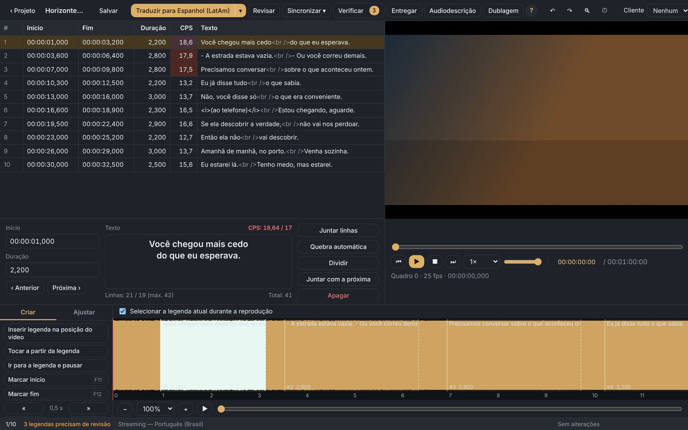
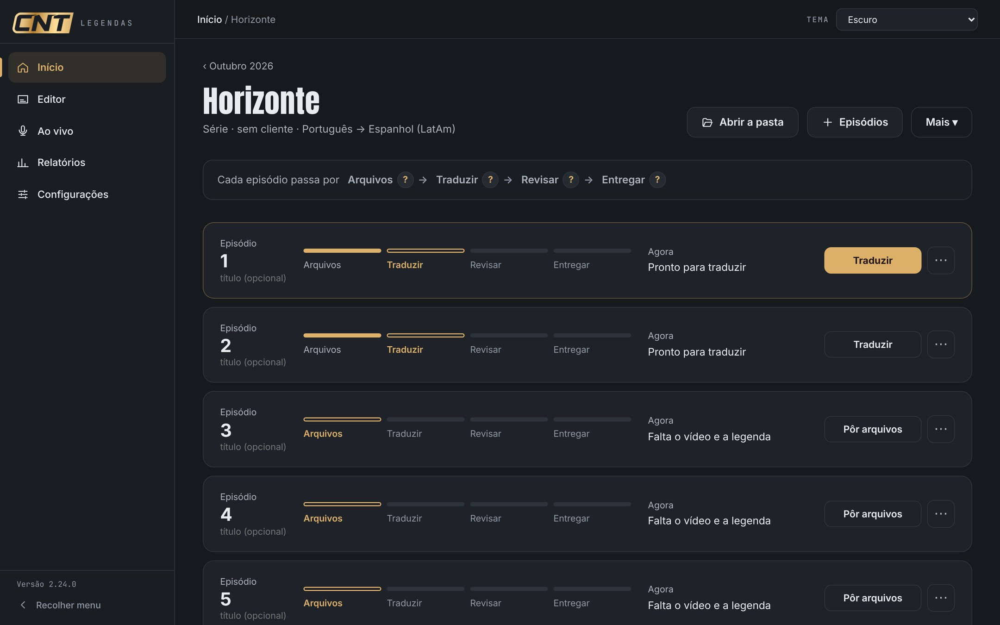
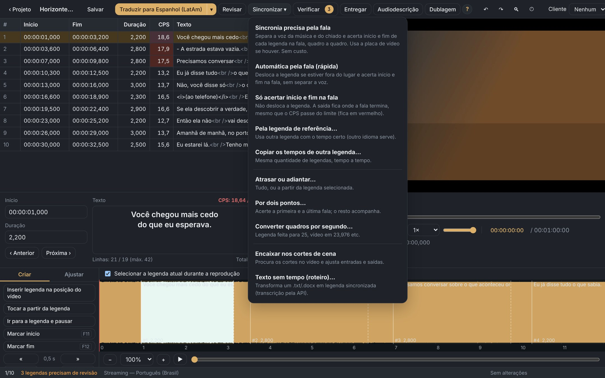
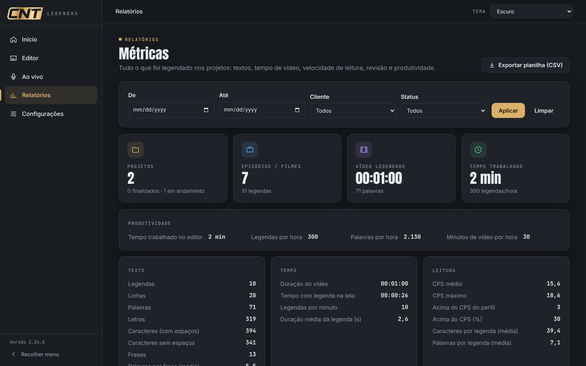
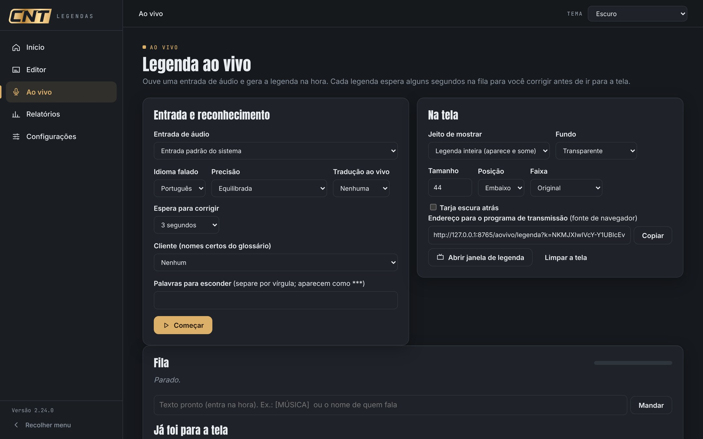
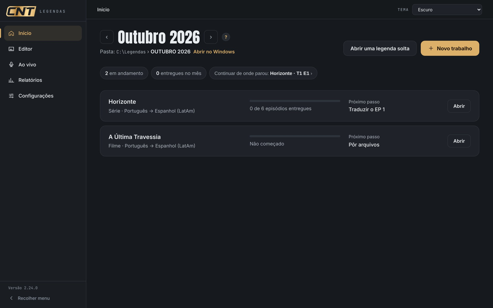
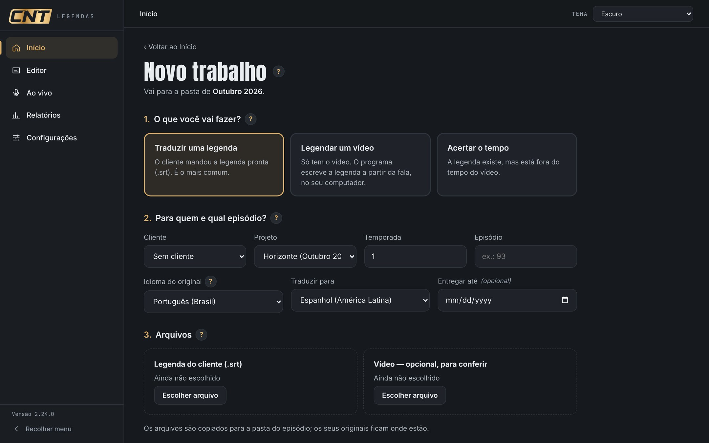

O CNT Legendas traduz, revisa, sincroniza e confere suas legendas no padrão das grandes plataformas, tudo no seu computador, com a velocidade da inteligência artificial e o controle da sua equipe.

Quem entrega legenda para plataformas e emissoras vive entre prazos curtos, manuais diferentes para cada cliente e retrabalho por detalhes que a revisão pega tarde demais.
Episódios chegam em lote e o prazo não muda. Cada hora gasta em tarefa repetitiva é hora a menos de revisão.
Limite de caracteres, velocidade de leitura, tempo mínimo, pontuação, glossário de nomes. O que vale para um não vale para outro.
Erro de tempo ou de estilo achado na entrega vira devolução. O ideal é pegar tudo antes de enviar.
Um programa único que reúne tradução com IA, editor profissional, sincronia pela fala, verificação automática e entrega. Instala em minutos, funciona no seu computador e já vem com os padrões de legendagem prontos.
Cada episódio segue o mesmo caminho. O programa mostra sempre onde você parou e qual é o próximo passo.

Lotes com contexto das falas vizinhas, glossário de nomes e limite de caracteres por legenda. 20 idiomas.
Velocidade de leitura, duração, intervalo e linhas são conferidos, com correção automática de tempos e de estilo.
Acerta o tempo da legenda pela voz do vídeo, quadro a quadro. Também por outra legenda de referência.
O trabalho roda no seu computador. A chave da IA é sua e o custo da IA vai direto ao provedor, sem intermediário.
Clientes, glossários e perfis de regras compartilhados, relatórios de produção e prazos de entrega por episódio.
O programa se atualiza sozinho ao abrir e ganha recursos novos com frequência, sem reinstalar nada.


Ouve o áudio e gera a legenda na hora, com fila para você corrigir antes de ir à tela. Saída para o programa de transmissão, com tradução ao vivo.
Acha os espaços sem fala, sugere descrições com IA, toca com voz do sistema ou com a sua própria e exporta roteiro e áudio.
Transcrição no próprio computador, sem custo, com detecção automática do idioma e falas em outro idioma no mesmo episódio.

O CNT Legendas foi pensado para quem lida com conteúdo confidencial de clientes.
Vídeos e legendas ficam na sua máquina. A transcrição roda no computador e, na tradução com IA, só o texto das legendas segue para o serviço que você escolher.
A chave do serviço de IA fica no cofre de senhas do computador, nunca em arquivo de texto.
O programa nunca altera nem apaga seus arquivos. Os resultados saem ao lado do original, em pasta organizada por mês.
Licença assinada, ligada ao computador e conferida ao abrir. Dados tratados conforme a Lei Geral de Proteção de Dados, com termos e política de privacidade.
O CNT Legendas é desenvolvido em contato direto com quem legenda no dia a dia. Quando você abre o programa, ele procura a versão mais nova e se atualiza sozinho, sem instalador, sem perder seu trabalho, com a lista do que mudou ao reabrir.
versão atual
idiomas de tradução, com detecção automática
sistemas: Windows, Mac e Linux
O botão “Relatar um problema” leva sua mensagem direto à equipe. A equipe de desenvolvimento recebe o relato na hora.
Você escolhe só quantos computadores precisa. Cobrança mensal.
Todo programa baixado tem 24 horas de avaliação com tudo liberado. Depois, o modo grátis continua disponível para criar projetos e traduzir à mão.
A IA usa a chave do próprio cliente: você paga ao provedor só o que usar, sem margem. Também dá para traduzir pelo seu assistente de IA, sem API.
Valores mensais, sujeitos a alteração. Consulte condições atuais no site.
Baixe o instalador, use tudo por 24 horas e veja quanto tempo sua equipe ganha por episódio. Se quiser, fazemos uma demonstração com um arquivo do seu próprio fluxo.

